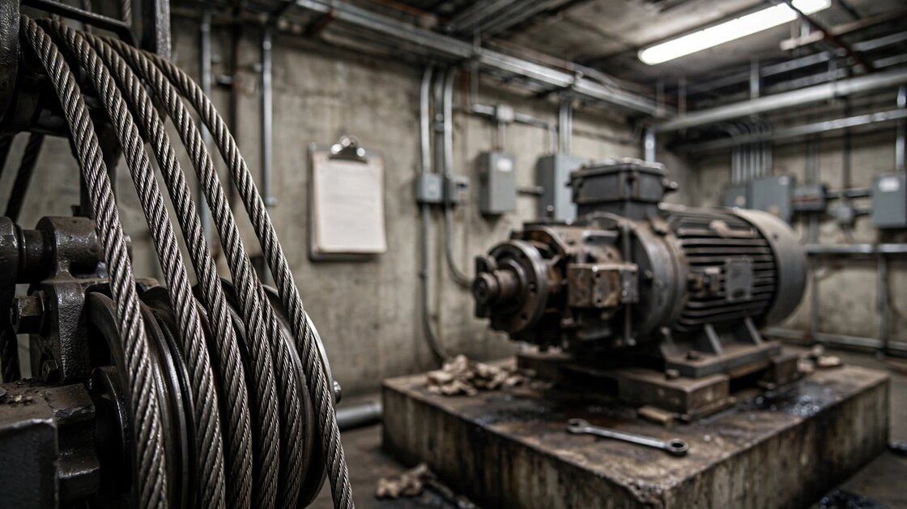

Elevator Inspection Compliance SaaS for Building Owners and Property Managers
The United States has roughly 1.1 million elevators, each requiring periodic inspection under state or local law. A New York State Comptroller audit found that 13% of required inspections in New York City simply never happened in a given year. Inspectors signed certificates for elevators they hadn't visited. Defective door restrictors went undetected. Penalties for building owners run up to $5,000 per elevator per year, and the only people who know whether your elevator was actually inspected are the people you're paying to inspect it. There is no vendor-neutral platform that lets building owners track, verify, and document elevator compliance across properties and jurisdictions.

The Problem
Elevators are the most regulated moving equipment inside American buildings. Every state with an elevator safety law requires periodic inspections, usually annual, performed by or under the supervision of a Qualified Elevator Inspector (QEI) certified under ASME QEI-1. The inspections verify compliance with the ASME A17.1 Safety Code for Elevators and Escalators, the de facto national standard adopted by reference in virtually every jurisdiction that regulates elevators.
The installed base is enormous. According to ResearchAndMarkets data published in July 2025, the US elevator installed base is projected to reach 1.26 million units by 2030, with approximately 37,000 new units added annually. New York City alone accounts for over 80,000 elevators under the jurisdiction of the Department of Buildings.
The compliance picture is grim. A 2018 New York State Comptroller audit of the NYC Department of Buildings' elevator oversight found systemic failures across every dimension of the inspection process. In 2015, non-DOB inspectors failed to perform 8,087 of 62,166 required inspections. In 2016, the gap was 6,741 of 63,314. That is a 10-13% annual non-compliance rate in the most heavily regulated elevator jurisdiction in the country.
Worse than the gap itself was what the audit uncovered about the inspections that did occur. Auditors observed that two of nine sampled non-DOB elevator inspectors had signed inspection certificates for 15 elevators across 14 buildings that had not yet been inspected. Three inspectors failed to identify defective door restrictors, a condition classified as "imminently hazardous" requiring immediate removal from service. One inspector lacked the gauge required to measure hoist cable diameter. Across the sample, inspectors overlooked 29 violations including non-functioning emergency telephones, expired fire extinguishers in machine rooms, and missing maintenance logs.
The building owner bears the liability. Under NYC rules (1 RCNY §103-02), an owner who fails to file a Category 1 inspection report faces a civil penalty of $3,000 per elevator. Category 3 or 5 test reports carry a $5,000 penalty per elevator. Late filings accrue $150-$250 per month per elevator. An owner with 10 elevators who misses a single filing cycle faces $30,000-$50,000 in penalties before attorneys get involved.
The Structural Conflict
Here is the market failure that makes this a startup opportunity, not just a regulatory annoyance. The entities performing elevator inspections are overwhelmingly the same companies that maintain the elevators.
The US elevator service market is dominated by four multinational OEMs: Otis Worldwide, Schindler, TK Elevator, and KONE. Together they control roughly 70-75% of the US elevator service and maintenance market. Each has inspection divisions or affiliated agencies. The same company that maintains your elevator often inspects it.
Property managers and building owners have long recognized this conflict. An elevator company inspecting its own maintenance work has obvious incentive misalignment. But independent third-party inspection agencies are scarce. Virginia's state legislature passed § 54.1-1142.2 specifically to allow temporary certifications when a licensed elevator contractor demonstrates a shortage of available qualified mechanics. The QEI pool is small, aging, and concentrated in metro areas.
The building owner, who is legally liable for compliance, has the least visibility into whether compliance is actually happening. They receive a certificate. They pay the bill. They file with the jurisdiction. They have no practical way to verify that the inspector spent appropriate time on-site, tested what the certificate claims was tested, or identified and reported all deficiencies found.
The Gap in the Market
Software exists for elevator service companies. It does not exist for building owners.
| Company | What They Do | What's Missing |
|---|---|---|
| FIELDBOSS | Microsoft Dynamics 365-based ERP for elevator contractors. Handles dispatching, work orders, contract management, and billing. Enterprise-grade, priced accordingly. | Built for the service company, not the building owner. The property manager never touches it. No compliance tracking from the owner's perspective. |
| ElevatorApp | Cloud-based field service platform for small to mid-size elevator companies. Unit-specific maintenance logs, mobile inspection forms, customer portal. | The "customer portal" shows what the service company wants you to see. No cross-vendor comparison. No multi-jurisdiction compliance tracking. No independent verification layer. |
| Smart Service | QuickBooks-native field service software adapted for elevator trades. Per-car PM scheduling, jurisdiction inspection cycles, mobile app for mechanics. | Again, a tool for the contractor. The building owner is a line item in the CRM, not a user. Compliance is tracked from the service provider's workflow, not the owner's obligations. |
| Schindler Ahead ActionBoard | Real-time equipment monitoring and maintenance portal for Schindler customers. Availability data, service history, performance reports. | Vendor lock-in by design. Only works for Schindler-maintained equipment. A building with elevators from two vendors needs two dashboards, and neither shows the full compliance picture. |
| BuildingLink / Yardi / AppFolio | General property management platforms with maintenance ticketing, vendor management, and some compliance tracking. | Elevator compliance is a checkbox in a generic module. No understanding of ASME A17.1 categories, jurisdiction-specific filing deadlines, QEI certification requirements, or deficiency remediation workflows. |
The pattern repeats what we see across regulated building systems (fire alarms, backflow preventers, cooling towers): the service provider has sophisticated software, and the building owner has a filing cabinet. The difference with elevators is the penalty structure. Miss a fire extinguisher inspection and you get a notice. Miss an elevator inspection in New York City and you get a $5,000 fine per unit with criminal referral language in the statute.
The Solution
A SaaS platform built for the building owner and property manager side of elevator compliance, not the service company side. The core product:
1. Multi-property, multi-jurisdiction compliance dashboard. Every elevator across a portfolio, mapped to its jurisdiction's specific inspection requirements. NYC has Category 1, 3, and 5 tests on different cycles. Texas requires annual QEI inspections with 60-day filing windows. Pennsylvania mandates inspections every 6 or 12 months depending on equipment type. The platform normalizes these into a unified compliance calendar with automated deadline alerts. A property manager running 200 elevators across buildings in three states sees one dashboard, not three different regulatory frameworks they have to track manually.
2. Inspection verification layer. When an inspector arrives on-site, they check in through the platform with GPS-verified location and timestamped entry. The building owner sees that the inspector arrived at the property at 9:14 AM and spent 47 minutes on-site, not that a certificate appeared in the mail two weeks later. Photo documentation of machine room conditions, pit inspections, and door tests creates a permanent record that goes beyond the binary pass/fail of the compliance certificate. This directly addresses the Comptroller's finding that inspectors were signing certificates for inspections they never performed.
3. Deficiency tracking and remediation workflow. When an inspection identifies violations, the platform creates a remediation task with the jurisdiction's correction deadline, assigns it to the responsible service company, and tracks it through resolution. The building owner can see at a glance which deficiencies remain open, which are overdue, and what the financial exposure is for each. In NYC, failure to file an Affirmation of Correction triggers additional penalties of $1,000-$3,000 per elevator depending on building class.
4. Service provider benchmarking. Over time, the platform accumulates inspection pass rates, deficiency counts, response times, and cost per unit across service providers. A property manager can compare their Otis-maintained buildings against their TK Elevator-maintained buildings on objective compliance metrics. This data does not exist today in any aggregated form accessible to building owners. The service companies have it internally and do not share it.
5. Regulatory filing automation. For jurisdictions that accept electronic filings (NYC's DOB NOW: Safety, Texas TDLR, Washington L&I), the platform auto-generates and submits the required reports using data captured during the inspection process. For jurisdictions that still require paper filings, it generates print-ready documents pre-populated with all required fields. The $150-$250/month late filing penalties in NYC are often caused not by the inspection itself being late, but by the paperwork sitting on someone's desk.
The Math: What Non-Compliance Actually Costs
Take a mid-size commercial property manager in New York City operating 15 buildings with 120 total elevators. This is a realistic portfolio for a regional REIT or family office.
Scenario A: Status quo (paper-based compliance tracking)
At the NYC 2015 non-compliance rate of 13%, roughly 16 of 120 elevators will miss their inspection in a given year. Each failure-to-file violation carries a $3,000 civil penalty for residential Category 1 or $5,000 for non-residential Category 5. At a blended average of $3,500 per missed filing: 16 × $3,500 = $56,000 in annual penalties.
That figure understates the real exposure. Late filings that trickle in over subsequent months accrue $150-$250 per month per elevator. If those 16 units average three months late: 16 × $200 × 3 = $9,600 in additional late fees. If any deficiencies go uncorrected past the 104-day deadline, each triggers another $1,000-$3,000 penalty. Realistic annual penalty exposure for a 120-elevator portfolio with mediocre compliance discipline: $65,000-$85,000.
Now extend this calculation nationally. At the NYC non-compliance rate of 13% applied across the ~700,000 US elevators in jurisdictions that mandate inspections (not all states do), approximately 91,000 elevators are out of compliance in any given year. At a conservative blended penalty of $1,500 per violation (most jurisdictions impose lower fines than NYC): 91,000 × $1,500 = $136 million in aggregate annual penalty exposure across the US elevator fleet. That's money building owners are paying in fines rather than in compliance tools, and it's a floor estimate because it excludes liability costs from incidents involving uninspected equipment.
Scenario B: Automated compliance management
Platform subscription at $25/elevator/month for the 120-unit portfolio: 120 × $25 × 12 = $36,000/year. If the platform reduces the miss rate from 13% to 2% (still not perfect, because some buildings will have access issues), the annual penalty exposure drops to: 2.4 elevators × $3,500 = $8,400. Net savings: $65,000 - $8,400 - $36,000 = $20,600/year in direct penalty avoidance.
But the penalty math is the small number. The larger value is liability reduction. The Center to Protect Workers' Rights documented roughly 30 elevator-related fatalities per year across worker and passenger incidents, with the CPSC reporting approximately 17,000 elevator-related injuries annually treated in emergency departments. When an incident occurs in an uninspected elevator, the building owner's insurance carrier and litigation counsel will ask one question first: was the inspection current? A documented, verified, timestamped compliance record transforms the owner's legal position from "we think so" to "here's the GPS check-in, the photo documentation, and the filed certificate."
Revenue Model
| Revenue Stream | Amount | Notes |
|---|---|---|
| Core compliance SaaS (per elevator/month) | $20-30 | Dashboard, deadline alerts, filing automation, deficiency tracking. Scales with portfolio size. |
| Inspection verification module | $10/elevator/month add-on | GPS check-in, photo documentation, time-on-site tracking. Requires inspector-side mobile app adoption. |
| Regulatory filing service | $50/filing (one-time per cycle) | Auto-submission to DOB NOW, TDLR, and other electronic portals. Manual filing preparation for paper jurisdictions. |
| Benchmarking analytics (premium tier) | $500/month (portfolio-level) | Cross-vendor performance comparison, cost-per-unit analysis, predictive compliance scoring. |
| Inspector marketplace (Phase 2) | 15% referral fee | Connect building owners with independent QEI-certified inspectors. Addresses the structural conflict. |
Unit economics on a 120-elevator portfolio (single customer): Core SaaS: 120 × $25 × 12 = $36,000/year. Verification add-on (50% attach rate): 60 × $10 × 12 = $7,200/year. Filing service: 120 × $50 = $6,000/year. Total customer value: $49,200/year at ~85% gross margin. Customer acquisition via property management conferences and BOMA chapter partnerships: estimated $8,000-$12,000 CAC for enterprise accounts. LTV at 5-year retention: $246,000. LTV:CAC: ~20-30x.
Market Size
TAM: 1.1 million US elevators × $25/month × 12 = $330M/year for core SaaS alone. Adding verification modules, filing services, and analytics tiers brings total addressable to approximately $500M/year.
SAM: Focus on jurisdictions with active enforcement (New York, Texas, California, Pennsylvania, Massachusetts, Illinois, Florida) representing approximately 550,000 elevators in managed commercial and residential properties (excluding single-family homes with residential lifts). At $25/elevator/month: $165M/year.
SOM (year 3): 15,000 elevators across ~200 property management accounts in NYC, Texas, and California. At blended $30/elevator/month: $5.4M ARR. 2.7% penetration of SAM.
Why Now
NYC Local Law 147 of 2021 just expanded the regulatory perimeter. Effective December 2024, the definition of "major building" in the NYC Building Code changed from 10+ stories or 125+ feet to 7+ stories or 75+ feet. Thousands of buildings that previously fell under lighter oversight now face the full inspection and testing regime applied to major buildings. Building owners who had compliance routines calibrated for one set of requirements suddenly face a more demanding standard, and many don't yet know it.
The inspector shortage is getting worse, not better. Virginia's legislature created an emergency temporary certification pathway specifically because licensed elevator contractors could not find enough QEI-certified mechanics. The National Elevator Industry Educational Program (NEIEP) trains roughly 3,000 new elevator technicians per year, but the workforce is aging and attrition exceeds new entrants in most markets. Fewer inspectors per elevator means longer gaps between inspections, more pressure on scheduling, and more opportunities for missed cycles.
Modernization is creating compliance complexity. The US elevator modernization market is projected to reach $3.23 billion by 2030. Modernized elevators often trigger new acceptance tests and code compliance verification under the current edition of ASME A17.1, adding inspection requirements on top of the annual cycle. A building owner modernizing three elevators while maintaining seven older units faces overlapping compliance timelines that no paper-based system can reliably track.
Insurance carriers are tightening requirements. Commercial property insurers increasingly require documented elevator compliance as a condition of coverage renewal. A building with lapsed inspections faces either coverage denial or premium surcharges that can exceed the cost of compliance software by an order of magnitude. The platform's timestamped verification data feeds directly into insurance renewal documentation.
Startup Costs
| Category | Cost | Notes |
|---|---|---|
| Software engineering (platform + mobile app, 9 months) | $380K | 2 backend + 1 frontend + 1 mobile developer. Multi-tenant SaaS, jurisdiction rules engine, inspector mobile app, DOB NOW API integration. |
| Regulatory data compilation | $60K | Contract legal research to map inspection requirements, filing procedures, and penalty structures across top 15 states. This dataset is the product's moat. |
| NYC pilot program (25 buildings, ~200 elevators) | $40K | Subsidized onboarding for first customers. Free platform for 6 months in exchange for feedback and case study rights. NYC is the densest elevator market and the strictest enforcement environment. |
| Industry partnerships and sales | $50K | BOMA (Building Owners and Managers Association) sponsorships, NAEC (National Association of Elevator Contractors) conference attendance, direct sales team for property management companies. |
| Inspector recruitment and onboarding (marketplace) | $30K | Build initial supply of independent QEI-certified inspectors in NYC, Dallas, and LA markets. Critical for the verification layer to work. |
| Compliance and legal | $25K | Data privacy review, terms of service, inspector liability insurance requirements. |
| Operating buffer (12 months) | $65K | Cloud infrastructure, API costs for jurisdiction portals, customer support. |
| Total | $650K |
Limitations
The 13% non-compliance rate comes from a single audit of NYC's non-DOB inspector program covering 2015-2016. NYC is an outlier on both ends: it has the most elevators and the most enforcement resources. The non-compliance rate in less-regulated jurisdictions could be higher (because enforcement is lax) or lower (because the elevator stock is newer and more concentrated among OEM service contracts). There is no national dataset on elevator inspection compliance rates. The $136 million aggregate penalty estimate is an extrapolation that assumes NYC's rate and a conservative penalty level, but actual penalties vary enormously by jurisdiction and enforcement posture.
The inspection verification layer depends on inspector adoption of a third-party mobile app. Inspectors employed by the Big 4 OEMs already use proprietary mobile tools and may resist adding another app to their workflow. The verification module's value proposition is strongest with independent third-party inspectors, who are precisely the population that is smallest and hardest to reach. Phase 1 will likely need to rely on building owner-side documentation (photos, timestamps from building access systems) rather than full inspector-side adoption.
Several states have no elevator safety law at all. According to the National Association of Elevator Contractors, states without comprehensive elevator inspection requirements include Alabama, Wyoming, and portions of several other states where jurisdiction is delegated to municipalities. The TAM estimate of 1.1 million elevators includes units in unregulated jurisdictions where the compliance product has no regulatory driver. The SAM adjustment to 550,000 elevators accounts for this, but the boundary between regulated and unregulated jurisdictions is itself unclear and shifting.
The building owner's willingness to pay depends on their current penalty experience. A property manager who has never been fined may not perceive the risk. The sales process will require education about penalty exposure, which lengthens the cycle. The NYC Comptroller audit is a powerful sales tool, but it's eight years old. Updated audit data would strengthen the case considerably.
Strongest Counterargument
Otis Worldwide generated over $14 billion in revenue in 2024, with the service segment representing roughly 60% of total revenue. Otis, Schindler, KONE, and TK Elevator collectively maintain approximately 75% of the US elevator installed base. These companies already have the data: every inspection performed, every deficiency found, every repair completed. If building owners want compliance transparency, the Big 4 can simply open up their existing dashboards. Schindler already offers ActionBoard. Otis has Otis ONE, its IoT platform with real-time equipment monitoring. Building owners trust their service providers because they have to, and a startup platform doesn't change that dependency.
The rebuttal is that the conflict of interest is the product opportunity. An Otis-provided compliance dashboard tells the building owner what Otis wants them to know. It will never flag that the Otis-maintained elevator has a higher deficiency rate than the KONE-maintained elevator next door, because Otis doesn't have that data and wouldn't share it if they did. The vendor-neutral comparison layer is something no OEM will build because it would expose their own service quality to competitive scrutiny. This is structurally similar to how independent restaurant health inspection platforms (Yelp Health Scores, iwaspoisoned.com) emerged despite restaurants objecting that they already tracked food safety internally. The building owner wants a second opinion, and the people providing the first opinion have every reason to keep it opaque.
The harder version of this counterargument: Yardi and RealPage, which together dominate commercial property management software, could add an elevator compliance module to their existing platforms. They already have the customer relationships and the property data. A purpose-built startup competing against a feature addition from an incumbent with 80% market penetration is a difficult position. The counter-counter: Yardi and RealPage build generic compliance modules that treat elevators the same as fire alarms, HVAC maintenance, and pest control. They do not employ anyone who understands ASME A17.1 inspection categories, jurisdiction-specific filing deadlines, or QEI certification requirements. The regulatory depth required to build this product correctly is a moat that a generic property management platform will not invest in unless the standalone category proves out first.
What You Can Do
If you're a building owner or property manager: Pull your elevator inspection records for the last three years. For each elevator, verify that you have a filed inspection report and compliance certificate for every required cycle. In NYC, check your DOB NOW: Safety account for open violations and unpaid penalties. Nationally, check your state's online lookup if one exists (Texas TDLR, Washington L&I, and others offer public search tools). If you find gaps, fix them now. The penalties accrue whether or not you're aware of the violation.
If you're building this: Start in NYC. Nowhere else in the country combines the density of elevators per square mile, the severity of penalties, the volume of public enforcement data (DOB publishes violation records), and the regulatory complexity (five test categories on overlapping cycles) that makes the product indispensable on day one. Your first 50 customers should be mid-size NYC property managers with 50-500 elevators who currently track compliance in spreadsheets. BOMA of Greater New York is your first channel. Get the jurisdiction rules engine right for NYC, then expand to Texas (TDLR electronic filing) and California (OSHPD for hospitals, DSA for schools, local enforcement everywhere else).
If you're an investor: The US elevator service market generates roughly $30 billion annually in maintenance and modernization revenue. The compliance layer connecting building owners to regulators across that market runs on paper. No venture-funded startup currently owns this layer. The comparable analog is how BuildOps ($150M raised, $1B+ valuation) captured the commercial contractor workflow for HVAC and fire protection. Elevator compliance is a narrower vertical with deeper regulatory complexity, higher penalty exposure per unit, and a structural conflict of interest that guarantees demand for vendor-neutral oversight. First-mover advantage in building the jurisdiction rules database is durable because the data is hard to compile and fragmented across thousands of municipal and state codes.
The Bottom Line
Every building owner in America with an elevator is legally responsible for its inspection compliance. The penalty for failure ranges from a few hundred dollars in lenient jurisdictions to $5,000 per elevator per year in New York City. The people performing the inspections are overwhelmingly the same companies maintaining the elevators. There is no independent system that lets the building owner verify compliance, compare service providers, or automate the jurisdiction-specific paperwork. The closest thing to a compliance platform is a manila folder in the building manager's office. In a market with 1.1 million units, $136 million in estimated annual penalty exposure, and a structural conflict of interest at the center of the inspection process, the building owner's side of the equation is long overdue for software.